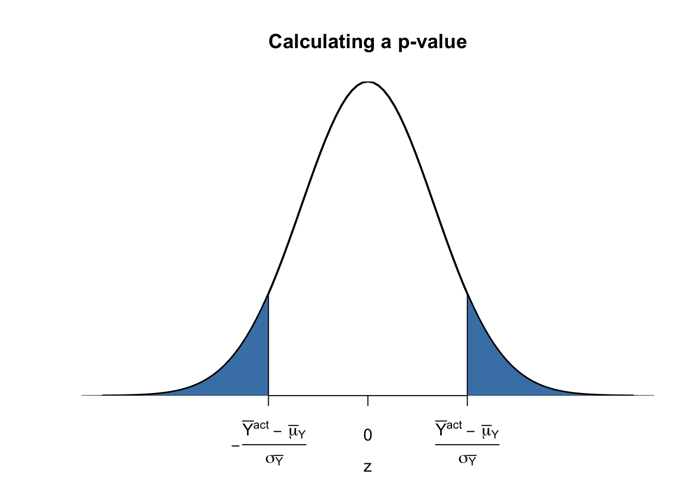
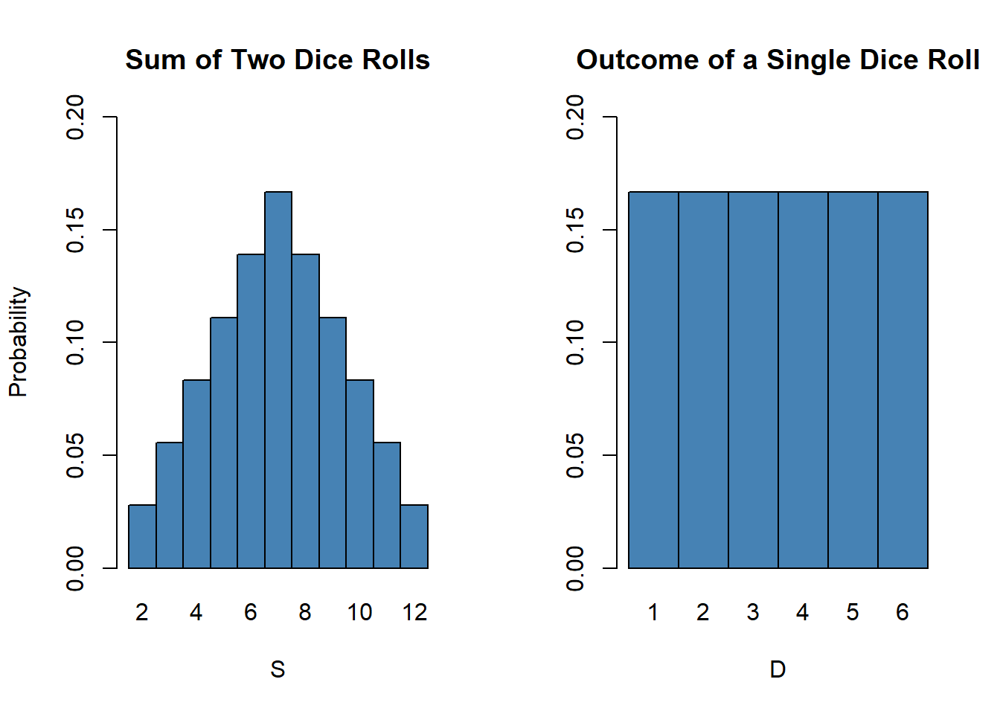
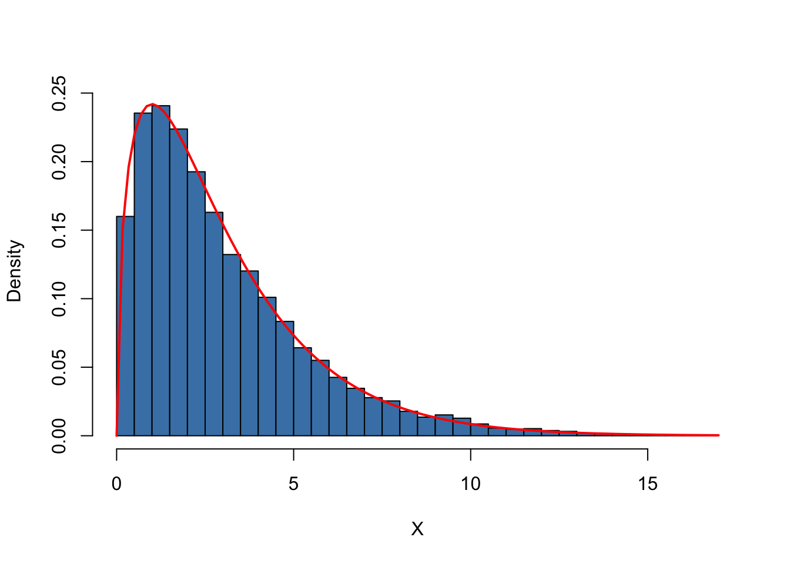
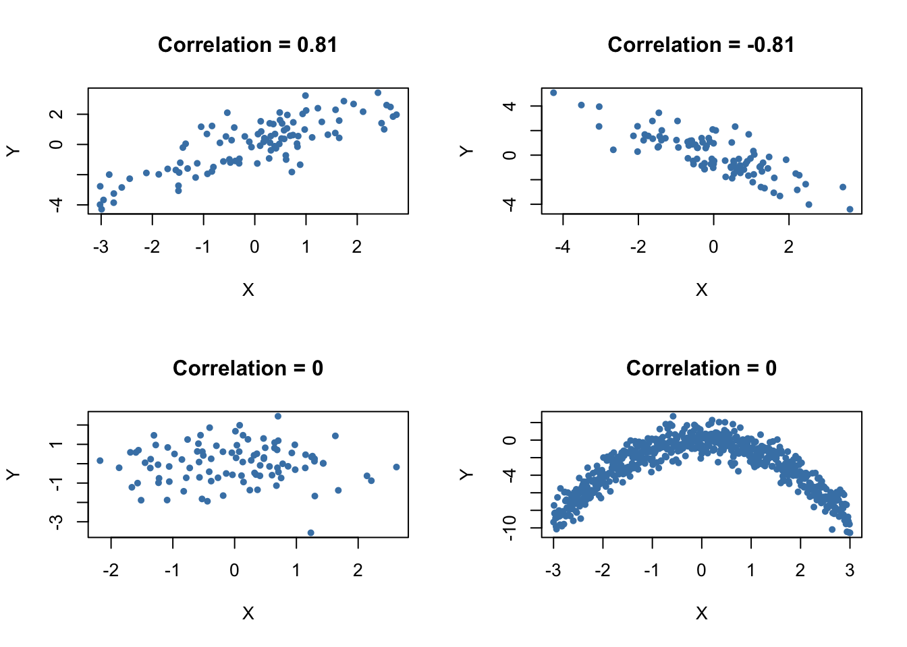

3.3 Hypothesis Tests Concerning the Population Mean
In this section we briefly review concepts in hypothesis testing and discuss how to conduct hypothesis tests in R. We focus on drawing inference about an unkown population mean.
About Hypotheses and Hypothesis Testing
In a significance test we want to exploit the information contained in a random sample as evidence in favour or against a hypothesis. Essentially, hypotheses are simple question that can be answered by ‘yes’ or ‘no’. When conducting a hypothesis test we always deal with two different hypotheses:
The null hypothesis, denoted \(H_0\) is the hypothesis we are interested in testing
The alternative hypothesis, denoted \(H_1\), is the hypothesis that holds if the null hypothesis is false
The null hypothesis that the population mean of \(Y\) equals the value \(\mu_{Y,0}\) is written down as
\[ H_0: E(Y) = \mu_{Y,0}. \]
The alternative hypothesis states what holds if the null hypothesis is false. Often the alternative hypothesis chosen is the most general one,
\[ H_1: E(Y) \neq \mu_{Y,0}, \]
meaning that \(E(Y)\) may be anything else but the value as the null hypothesis. This is called a two-sided alternative.
For brevity, we will only consider the case of a two-sided alternative in the subsequent sections of this chapter.
\(p\)-Value
Assume that the null hypothesis is true. The \(p\)-value is the probability of drawing data and observing a corresponding test statistics that is at least as adverse to what is stated under the null hypothesis as the test statistic actually computed using the sample data.
In context of population mean and sample mean, this definition can be stated mathematically in the following way:
\[\begin{equation} p \text{-value} = P_{H_0}\left[ \lvert \overline{Y} - \mu_{Y,0} \rvert > \lvert \overline{Y}^{act} - \mu_{Y,0} \rvert \right] \tag{3.2} \end{equation}\]In (3.2), \(\overline{Y}^{act}\) is the acutally computed mean of the random sample.
Visualized, the \(p\)-value is the area in the part of tails of the distribution of \(\overline{Y}\) that lies beyond
\[ \mu_{Y,0} \pm \lvert \overline{Y}^{act} - \mu_{Y,0} \rvert. \]
Consequently, in order to compute the \(p\)-value as in (3.2), knowledge about the sampling distribution of \(\overline{Y}\) when the null hypothesis is true is required. However in most cases the sampling distribution of \(\overline{Y}\) is unkown. Furtunately, due to the large-sample normal approximation (see chapter 3) we know that under the null hypothesis
\[ \overline{Y} \sim N(\mu_{Y,0}, \, \sigma^2_{\overline{Y}}) \ \ , \ \ \sigma^2_{\overline{Y}} = \frac{\sigma_Y^2}{n} \]
and thus
\[ \frac{\overline{Y} - \mu_{Y,0}}{\sigma_Y/\sqrt{n}} \sim N(0,1). \]
So in large samples, the \(p\)-value can be computed without knowledge about the sampling distribution of \(\overline{Y}\).
Calculating the \(p\)-Value When \(\sigma_Y\) Is Known
For now, let us assume that \(\sigma_{\overline{Y}}\) is known. Then we can rewrite (3.2) as
\[\begin{align} p \text{-value} =& \, P_{H_0}\left[ \left\lvert \frac{\overline{Y} - \mu_{Y,0}}{\sigma_{\overline{Y}}} \right\rvert > \left\lvert \frac{\overline{Y}^{act} - \mu_{Y,0}}{\sigma_{\overline{Y}}} \right\rvert \right] \\ =& \, 2 \cdot \Phi \left[ - \left\lvert \frac{\overline{Y}^{act} - \mu_{Y,0}}{\sigma_{\overline{Y}}} \right\rvert\right]. \tag{3.3} \end{align}\]so the \(p\)-value can be seen as the area in the tails of the \(N(0,1)\) distribution that lies beyond
\[\begin{equation} \pm \left\lvert \frac{\overline{Y}^{act} - \mu_{Y,0}}{\sigma_{\overline{Y}}} \right\rvert \tag{3.4} \end{equation}\]Whew, that was a lot of theory. Now we use R to visualize what is stated in (3.3) and (3.4). The next code chunck replicates figure 3.1 of the book.
# plot the standard normal density on the domain [-4,4]
curve(dnorm(x),
xlim = c(-4,4),
main = 'Calculating a p-value',
yaxs = 'i',
xlab = 'z',
ylab = '',
lwd = 2,
axes = 'F'
)
# add x-axis
axis(1,
at = c(-1.5,0,1.5),
padj = 0.75,
labels = c(expression(-frac(bar(Y)^"act"~-~bar(mu)[Y,0],sigma[bar(Y)])),
0,
expression(frac(bar(Y)^"act"~-~bar(mu)[Y,0],sigma[bar(Y)])))
)
# shade p-value/2 region in left tail
polygon(x = c(-6, seq(-6,-1.5,0.01),-1.5),
y = c(0, dnorm(seq(-6,-1.5,0.01)),0),
col = 'steelblue'
)
## shade p-value/2 region in right tail
polygon(x = c(1.5, seq(1.5, 6, 0.01), 6),
y = c(0, dnorm(seq(1.5, 6, 0.01)), 0),
col = 'steelblue'
)Sample Variance, Sample Standard Deviation and Standard Error
If \(\sigma^2_Y\) is unknown, it must be estimated. This can be done efficiently using the sample variance
\[\begin{equation} s_y^2 = \frac{1}{n-1} \sum_{i=1}^n (Y_i - \overline{Y})^2. \end{equation}\]Furthermore
\[\begin{equation} s_y = \sqrt{\frac{1}{n-1} \sum_{i=1}^n (Y_i - \overline{Y})^2}. \end{equation}\]is a suitable estimator for the standard deviation of \(Y\). In R, \(s_y\) is implemented in the function sd(), see ?sd.
Using R we can get a notion that \(s_y\) is a consistent estimator for \(\sigma_Y\), that is
\[ s_Y \overset{p}{\longrightarrow} \sigma_Y. \]
The idea here is to generate a large number of samples \(Y_1,\dots,Y_n\) where \(Y\sim N(10,10)\), estimate \(\sigma_Y\) using \(s_y\) and investigate how the distribution of \(s_Y\) changes as \(n\) grows.
# vector of sample sizes
n <- c(10000, 5000, 2000, 1000, 500)
# sample observations, estimate using sd() and plot estimated distributions
s2_y <- replicate(n = 10000, expr = sd(rnorm(n[1], 10, 10)))
plot(density(s2_y),
main = expression('Sampling Distributions of' ~ s[y]),
xlab = expression(s[y]),
lwd = 2
)
for (i in 2:length(n)) {
s2_y <- replicate(n = 10000, expr = sd(rnorm(n[i],10,10)))
lines(density(s2_y),
col=i,
lwd=2)
}
# add a legend
legend("topleft",
legend = c(expression(n==10000),
expression(n==5000),
expression(n==2000),
expression(n==1000),
expression(n==500)
),
col = 1:5,
lwd = 2
)
The plot shows that the distribution of \(s_Y\) tightens around the true value \(\sigma_Y = 10\) as \(n\) increases.
The function that estimates the standard deviation of an estimator is called the standard error of the estimator. Key Concept 3.4 summarizes the terminology in the context of the sample mean.
Key Concept 3.4
The Standard Error of \(\overline{Y}\)
Take an i.i.d. sample \(Y_1, \dots, Y_n\). The mean of \(Y\) can be consistently estimated using \(\overline{Y}\), the sample mean of the \(Y_i\). Since \(\overline{Y}\) is a random variable, it has a sampling distribution with variance \(\frac{\sigma_Y^2}{n}\).
The standard error of \(\overline{Y}\), denoted \(SE(\overline{Y})\) is an estimator of the standard deviation \(\overline{Y}\):
\[ SE(\overline{Y}) = \hat\sigma_{\overline{Y}} = \frac{s_Y}{\sqrt{n}} \]
The caret (^) over \(\sigma\) indicates that \(\hat\sigma_{\overline{Y}}\) is an estimator for \(\sigma_{\overline{Y}}\).
As an example to underpin Key Concept 3.4, consider a sample of \(n=100\) i.i.d. observations of the bernoulli distributed variable \(Y\) with success probability \(p=0.1\) and thus \(E(Y)=p=0.1\) and \(\text{Var}(Y)=p(1-p)\). \(E(Y)\) can be estimated by \(\overline{Y}\) which then has variance
\[ \sigma^2_{\overline{Y}} = p(1-p)/n = 0.0009 \]
and standard deviation
\[ \sigma_{\overline{Y}} = \sqrt{p(1-p)/n} = 0.03. \]
In this case the standard error of \(\overline{Y}\) is given as
\[ SE(\overline{Y}) = \sqrt{\overline{Y}(1-\overline{Y})/n} \]
Let verify whether \(\overline{Y}\) and \(SE(\overline{Y})\) estimate the respective true values on average.
# draw 10000 samples of size 100 and estimate the mean of Y and
# estimate the standard error of the sample mean
mean_estimates <- numeric(10000)
se_estimates <- numeric(10000)
for (i in 1:10000) {
s <- sample(0:1,
size = 100,
prob = c(0.9, 0.1),
replace = T
)
mean_estimates[i] <- mean(s)
se_estimates[i] <- sqrt(mean(s)*(1-mean(s))/100)
}
mean(mean_estimates)## [1] 0.099693mean(se_estimates)## [1] 0.02953467Both estimators seem to be unbiased for the true parameters.
Calculating the \(p\)-value When \(\sigma_Y\) is Unknown
When \(\sigma_Y\) is unkown, the \(p\)-value for a hypothesis test about \(\mu_Y\) using \(\overline{Y}\) can be computed by replacing \(\sigma_{\overline{Y}}\) in (3.3) by the standard error \(SE(\overline{Y}) = \hat\sigma_Y\). Then,
\[ p\text{-value} = 2\cdot\Phi\left(-\left\lvert \frac{\overline{Y}^{act}-\mu_{Y,0}}{SE(\overline{Y})} \right\rvert \right). \]
This is easily done in R:
# sample and estimate, compute standard error and make a hypothesis
samplemean_act <- mean(
sample(0:1,
prob = c(0.9,0.1),
replace = T,
size = 100
)
)
SE_samplemean <- sqrt(samplemean_act * (1-samplemean_act)/100)
mean_h0 <- 0.1 #true null hypothesis
# compute the pvalue
pvalue <- 2 * pnorm(-abs(samplemean_act-mean_h0)/SE_samplemean)
pvalue## [1] 0.5382527The \(t\)-statistic
In hypothesis testing, the standardized sample average
\[\begin{equation} t = \frac{\overline{Y} - \mu_{Y,0}}{SE(\overline{Y})} \tag{3.5} \end{equation}\]is called \(t\)-statistic. This \(t\)-statistic has an important role when testing hypothesis about \(\mu_Y\). It is a prominent example of a test statistic.
Implicitly, we already have computed a \(t\)-statistic for \(\overline{Y}\) in the previous code chunk.
# compute a t-statistic for the sample mean
tstatistic <- (samplemean_act - mean_h0) / SE_samplemean
tstatistic## [1] 0.6154575Using R we can show that if \(\mu_{Y,0}\) equals the true value, that is the null hypothesis is true, (3.5) is approximately distributed \(N(0,1)\) when \(n\) is large.
# initialize empty vector for t-statistics
tstatistics <- numeric(10000)
# set sample size
n <- 300
# simulate 10000 t-statistics
for (i in 1:10000) {
s <- sample(0:1,
size = n,
prob = c(0.9, 0.1),
replace = T
)
tstatistics[i] <- (mean(s)-0.1)/(sqrt(mean(s)*(1-mean(s))/n))
}
# plot density and compare to N(0,1) density
plot(density(tstatistics),
xlab = 't-statistic',
main = 'Distribution of the t-statistic when n=300',
lwd = 2,
xlim = c(-4,4),
col = 'steelblue'
)
# N(0,1) density (dashed)
curve(dnorm(x),
add = T,
lty = 2,
lwd= 2
)
Judging from the plot, the normal approximation works reasonably well for the chosen sample size. This normal approximation has already been used in the definition of the \(p\)-value, see (3.5).
Hypothesis Testing with a Prespecified Significance Level
Key Concept 3.5
The Terminology of Hypothesis Testing
In hypothesis testing, two types of mistakes are possible:
The null hypothesis is rejected although it is true (\(\alpha\)-error / type-I-error)
The null hypothesis is not rejected although it is false (\(\beta\)-error / type-II-error)
The significance level of the test is the probability to commit a type-I-error we are willing to accept in advance. E.g. using a prespecified significance level of \(0.05\), we reject the null hypothesis if and only if the \(p\)-value is less than \(0.05\). The significance level is chosen before the test is conducted.
An equivalent procedure is to reject the null hypothesis if the test statistic observed is, in absolute value terms, larger than the critical value of the test statistic. The critical value is determined by the significance level chosen and defines two disjoint sets of values which are called acceptance region and rejection region. The acceptance region contains all values of the test statistic for which the test does not reject while the rejection region contains all the values for which the test does reject.
The \(p\)-value is the probability that, in repeated sampling under the same conditions, meaning i.i.d. sampling, the same null hypothesis and the same sample size, a test statistic is observed that provides just as much evidence against the null hypothesis as the test statistic actually observed.
The actual probability that the test rejects the true null hypothesis is called the size of the test. In an ideal setting, the size does not exceed the significance level.
The probability that the test correctly rejects a false null hypothesis is called power.
Reconsider pvalue computed further above:
# check whether p-value < 0.05
pvalue < 0.05## [1] FALSEThe condition is not fulfilled so we do not reject the null hypotheis (remember that the null hypothesis is true in this example).
When working with a \(t\)-statistic instead, it is equivalent to apply the following rule:
\[ \text{Reject } H_0 \text{ if } \lvert t^{act} \rvert > 1.96 \]
We reject the null hypothesis at the significance level of \(5\%\) if the computed \(t\)-statistic lies beyond the critical value of 1.96 in absolute value terms. \(1.96\) is the \(0.05\)-quantile of the standard normal distribution.
# check the critical value
qnorm(p = 0.05)## [1] -1.644854# check whether the null is rejected using the t-statistic computed further above
abs(tstatistic) > 1.96## [1] FALSEAs when using the \(p\)-value, we cannot reject the null hypothesis using the corresponding \(t\)-statistic. Key Concept 3.6 summarizes the procedure of performing a two-sided hypothesis about the population mean \(E(Y)\).
Key Concept 3.6
Testing the Hypothesis \(E(Y) = \mu_{Y,0}\) Against the Alternative \(E(Y) \neq \mu_{Y,0}\)
Estimate \(\mu_{Y}\) using \(\overline{Y}\) and compute the standard error of \(\overline{Y}\), \(SE(\overline{Y})\).
Compute the \(t\)-statistic.
Compute the \(p\)-value and reject the null hypothesis at the \(5\%\) level of significance if the \(p\)-value is smaller than \(0.05\) or equivalently, if
\[ \left\lvert t^{act} \right\rvert > 1.96. \]
One-sided Alternatives
Sometimes we are interested in finding evidence that the mean is bigger or smaller than the some value hypothesized under the null. One can come up with many examples here but, to stick to the book, take the presumed wage differential between good and less educated working individuals. Since we hope that this differential exists, a relevant alternative (to the null hypothesis that there is no wage differential) is that good educated individuals earn more, i.e. that the average hourly wage for this group, \(\mu_Y\) is bigger than \(\mu_{Y,0}\) the know average wage of less educated workers.
This is an example of a right-sided test and the hypotheses pair is chosen as
\[ H_0: \mu_Y = \mu_{Y,0} \ \ \text{vs} \ \ H_1: \mu_Y > \mu_{Y,0}. \]
We reject the null hypothesis if the computed test-statistic is larger than the critical value \(1.64\), the \(0.95\)-quantile of the \(N(0,1)\) distribution. This ensures that \(1-0.95=5\%\) probability mass remains in the area to the right of the critical value. Similar as before we can visualize this in R using the function polygon().
# plot the standard normal density on the domain [-4,4]
curve(dnorm(x),
xlim = c(-4,4),
main = 'Rejection Region of a Right-Sided Test',
yaxs = 'i',
xlab = 't-statistic',
ylab = '',
lwd = 2,
axes = 'F'
)
# add x-axis
axis(1,
at = c(-4,0,1.64,4),
padj = 0.5,
labels = c('',0,expression(Phi^-1~(.95)==1.64),'')
)
# shade rejection region in right tail
polygon(x = c(1.64, seq(1.64, 4, 0.01), 4),
y = c(0, dnorm(seq(1.64, 4, 0.01)), 0),
col = 'darkred'
)
In an analogously manner for the left-sided test we have
\[ H_0: \mu_Y = \mu_{Y,0} \ \ \text{vs.} \ \ H_1: \mu_Y < \mu_{Y,0}. \]
The null is rejected if the observed test statistic falls short of the critical value which, for a test at the \(0.05\) level of significance, is given by \(-1.64\), the \(0.05\)-quantile of the \(N(0,1)\) distribution. \(5\%\) probability mass lies to the left of the critical value.
It is straight forward to adapt the code chunk above to the case of a left-sided test. We only have to fiddle with the color shading and the tick marks.
# plot the standard normal density on the domain [-4,4]
curve(dnorm(x),
xlim = c(-4,4),
main = 'Rejection Region of a Left-Sided Test',
yaxs = 'i',
xlab = 't-statistic',
ylab = '',
lwd = 2,
axes = 'F'
)
# add x-axis
axis(1,
at = c(-4,0,-1.64,4),
padj = 0.5,
labels = c('',0,expression(Phi^-1~(.05)==-1.64),'')
)
# shade rejection region in right tail
polygon(x = c(-4, seq(-4, -1.64, 0.01), -1.64),
y = c(0, dnorm(seq(-4, -1.64, 0.01)), 0),
col = 'darkred'
)